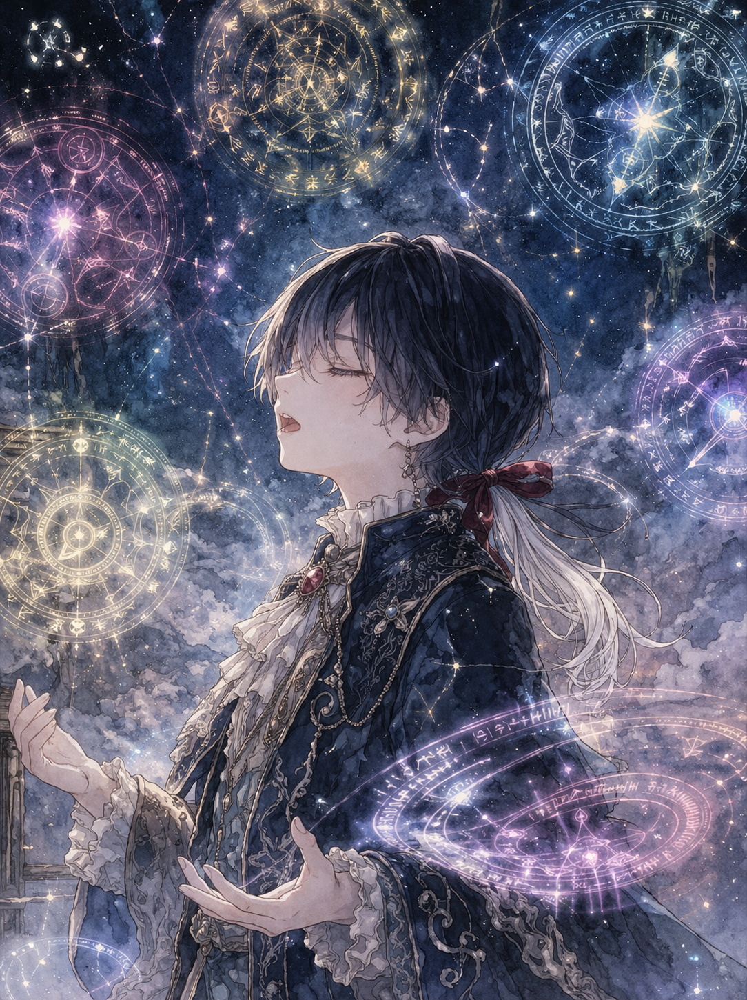
フルール
【七番目】の氷牢花
〝秩序〟と〝静観〟の神々に仕える御遣い。
美しい唄声を持つ少年。
弟を愛し慈しむ小さな兄。
登場人物
物語に登場する人物たちの紹介です。
画像はすべて生成AIを使用しています。
また、画像はすべてイメージです。

【七番目】の氷牢花
〝秩序〟と〝静観〟の神々に仕える御遣い。
美しい唄声を持つ少年。
弟を愛し慈しむ小さな兄。
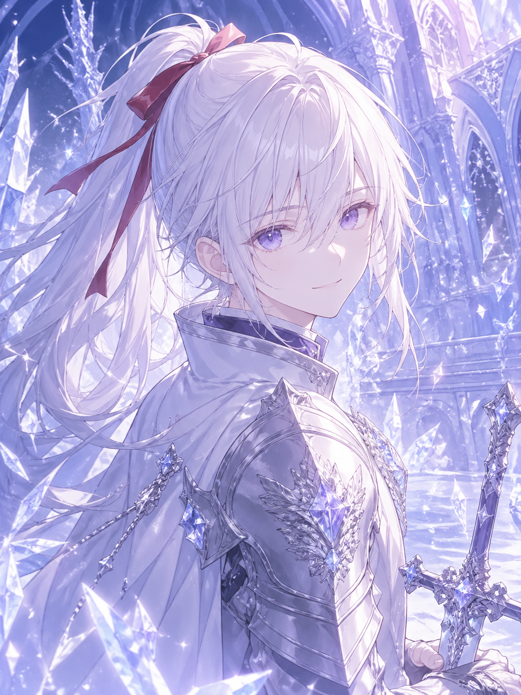
氷の花騎士
〝秩序〟と〝静観〟の神々に仕える御遣い。
兄を護るために剣を選んだ青年。
兄を護り敬愛する大きな弟。
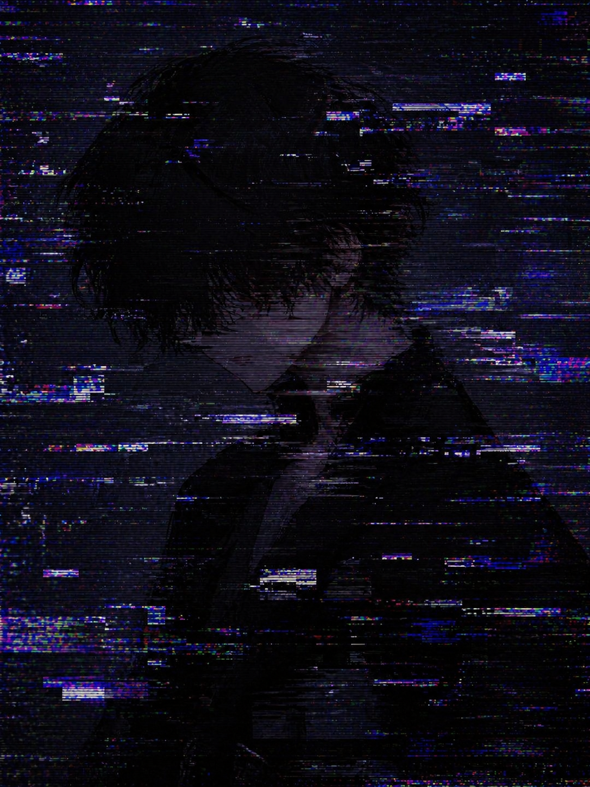
異邦人
〝地球〟の記憶を持つ青年。
一般常識以外の記憶を失っている。
半生半機の身体を持っおり、非常に頑強で怪力。
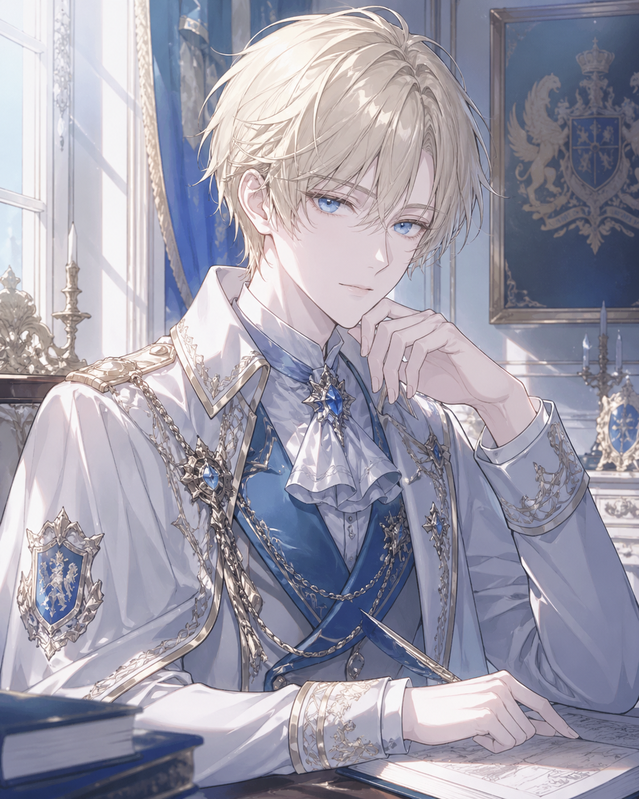
【葉桜の才】
〝桜並木の国〟を治める文王。
セナを保護し、義弟として迎え入れた。
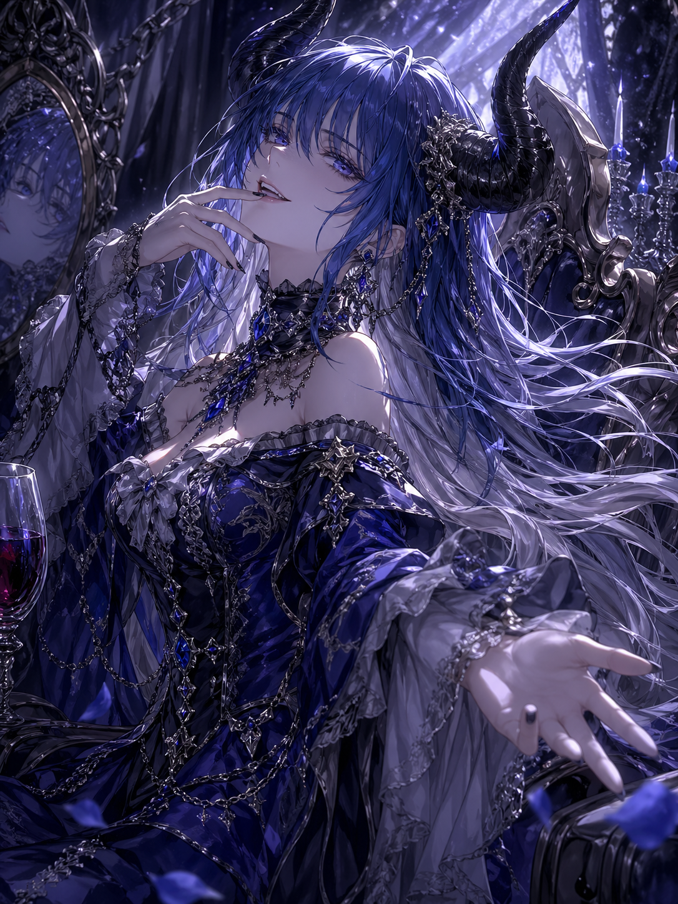
蠱惑の天使
〝罪罰〟と〝憤怒〟の神々に仕える使徒。
フリュイスの姉を名乗っているが、血縁関係はない。
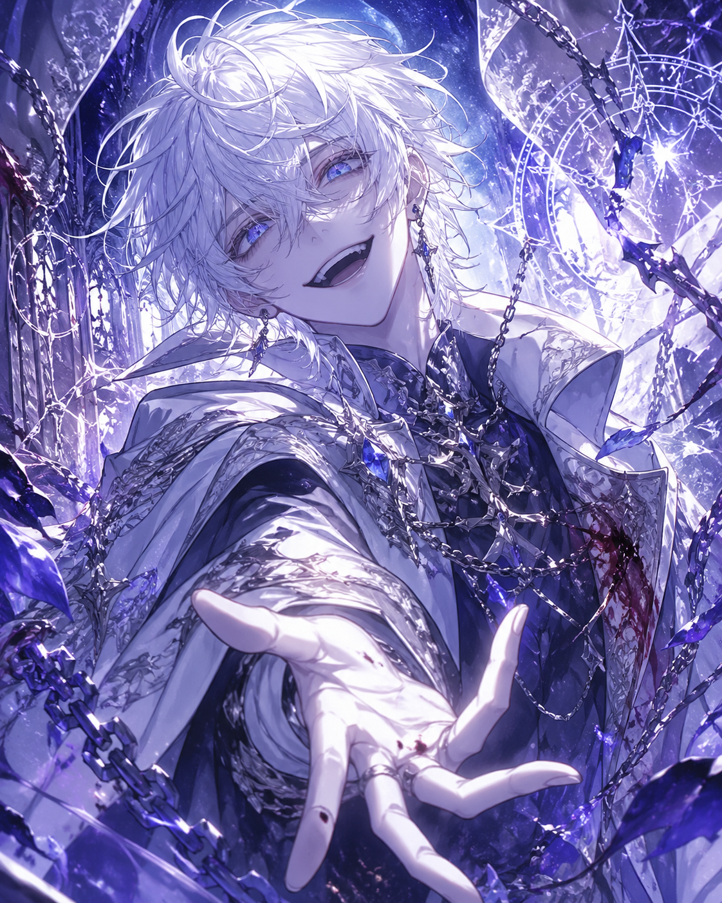
無邪気な殺戮者
〝罪罰〟と〝憤怒〟の神々に仕える使徒。
パピロンを慕い、レゼルに執着している。
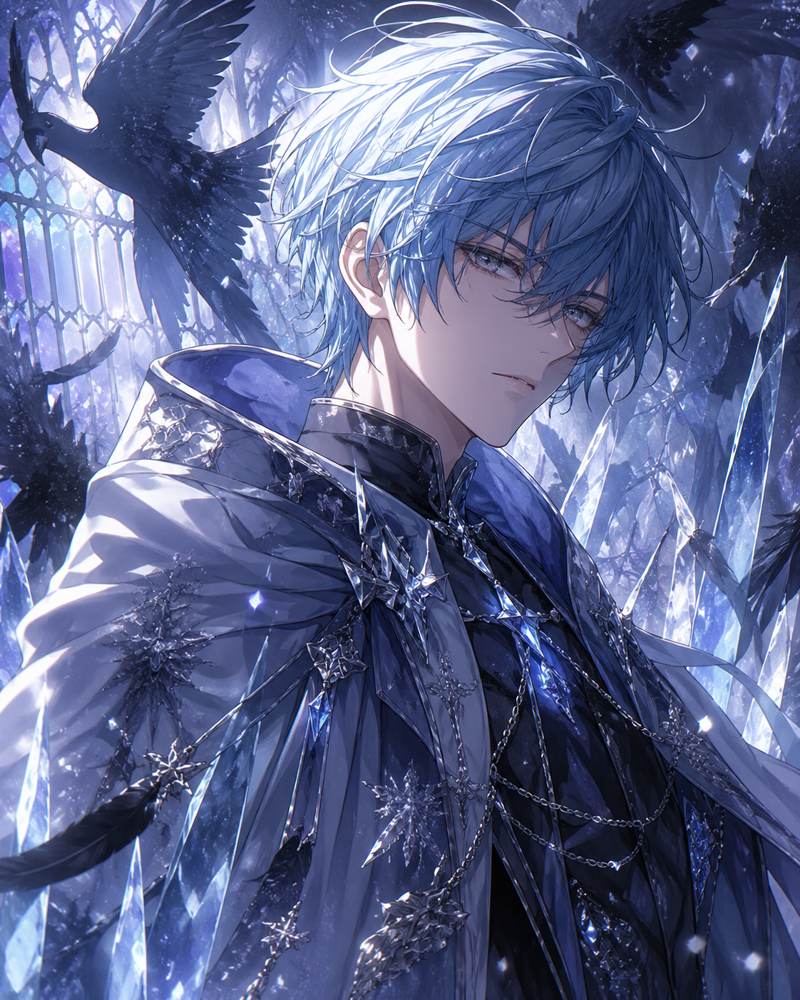
〝普通〟の青年
結晶の国の王族、【称号の六家】の一員。
外交を担当する【二番目の水】の三男。
当主である兄アンリに信頼されており、よく代理を任されている。
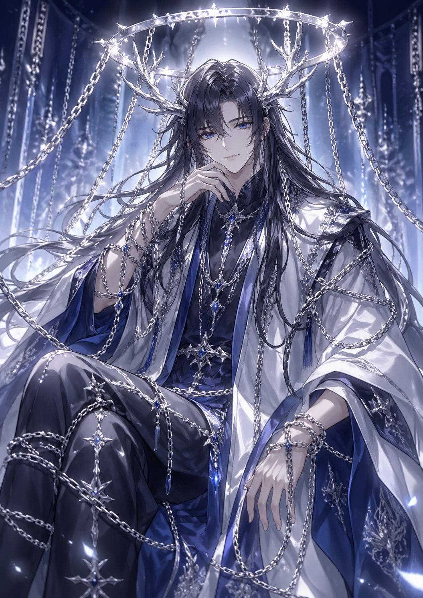
〝秩序〟と〝静観〟の神々
〝秩序〟と〝静観〟の神々。
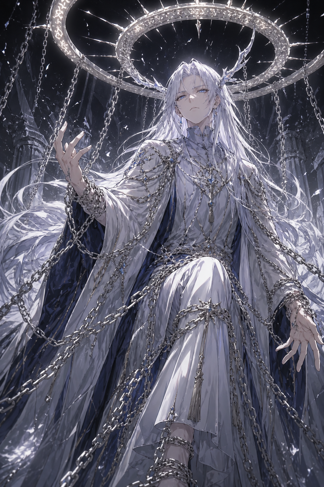
〝秩序〟と〝静観〟の神々
〝秩序〟と〝静観〟の神々。
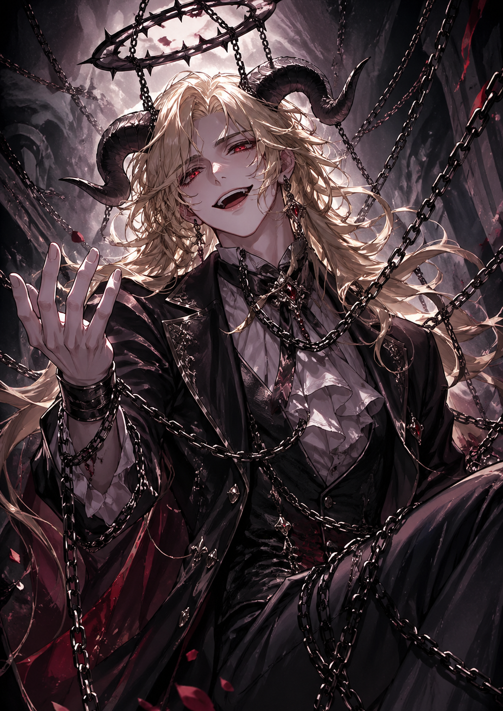
〝罪罰〟と〝憤怒〟の神々
〝罪罰〟と〝憤怒〟の神々
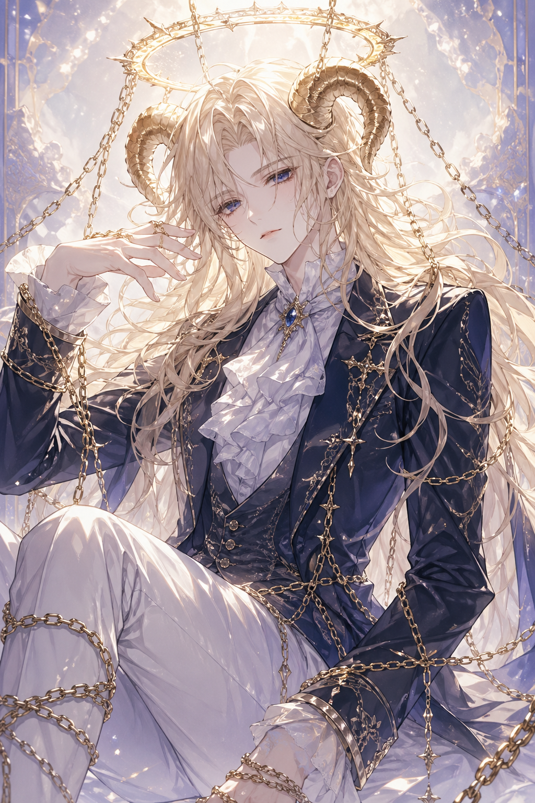
〝混乱〟と〝悪意〟の神々
〝混乱〟と〝悪意〟の神々
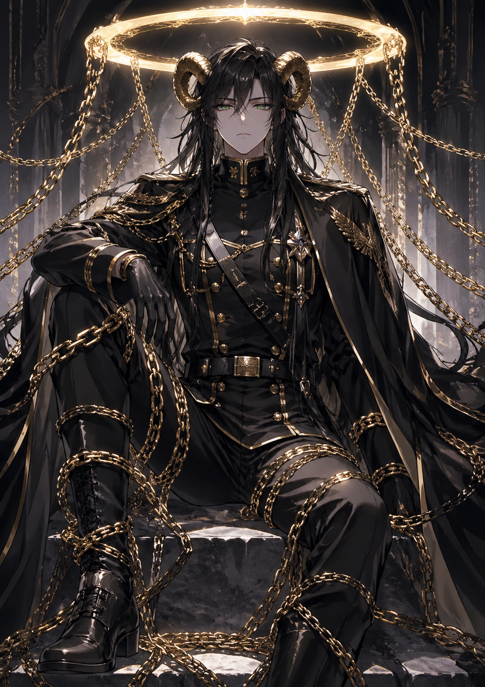
〝混乱〟と〝悪意〟の神々
〝混乱〟と〝悪意〟の神々